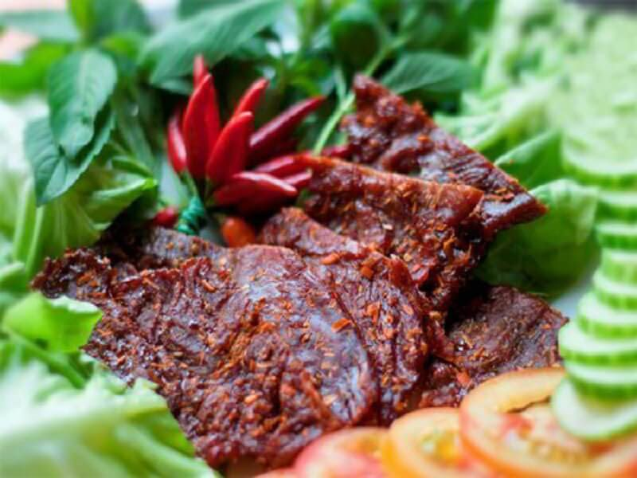
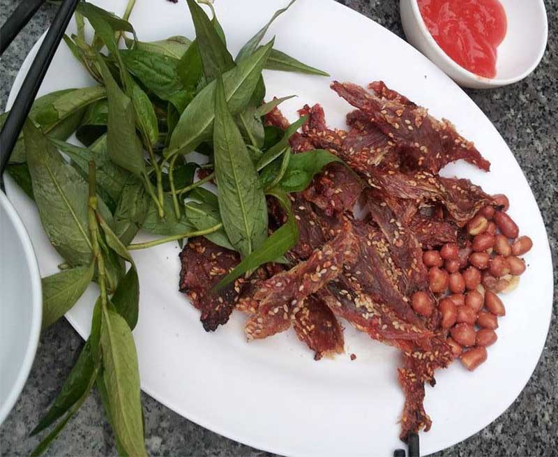
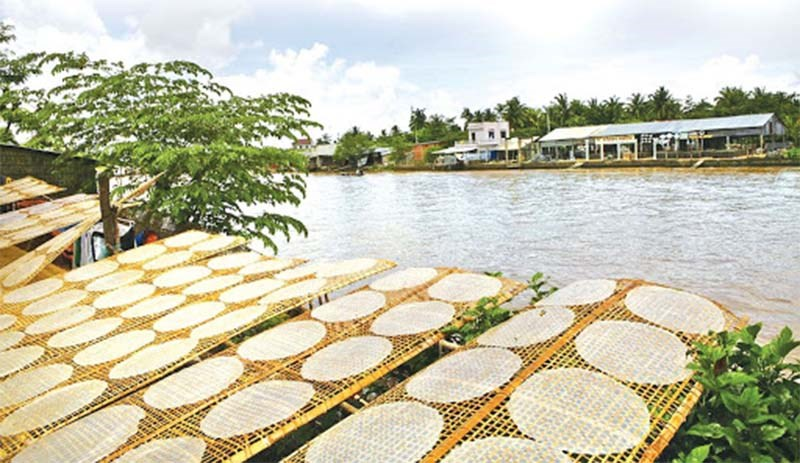
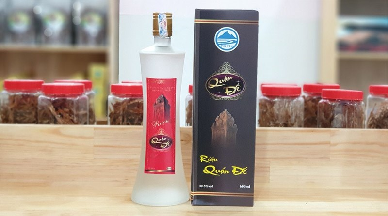
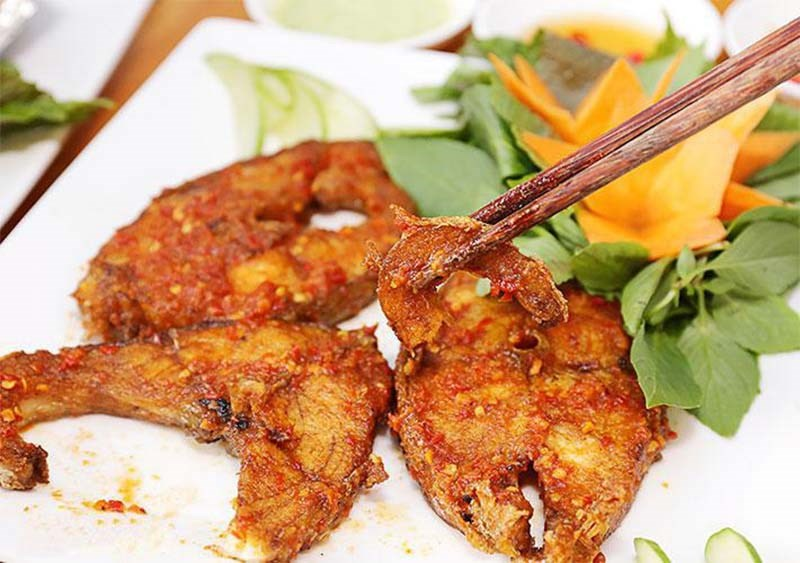
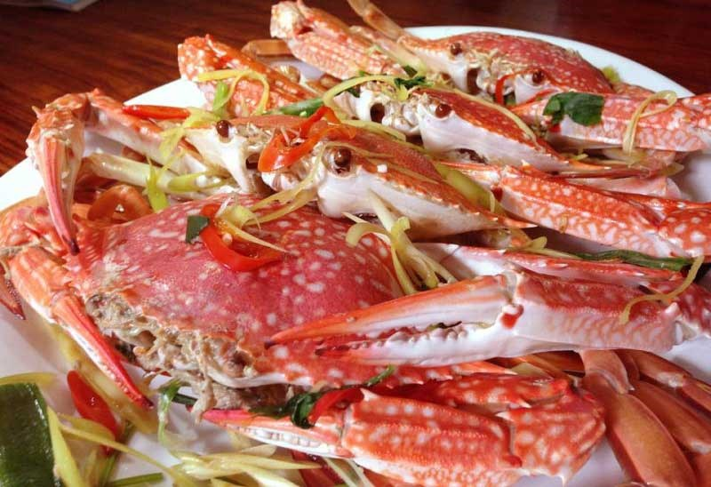

Nhắc đến đặc sản Phú Yên, người ta nhớ ngay đến món bò một nắng được chế biến một cách công phu, tỉ mỉ từ bước chọn nguyên liệu cho đến khi thành phẩm.
Nguyên liệu là những miếng thịt thăn (hoặc đùi) ngon nhất của giống bò chăn thả tự nhiên trên vùng núi Sơn Hoà. Sau đó đem về dùng rượu rửa sạch rồi cắt ra thành những miếng hình chữ nhật có độ dày từ 1,5 - 2cm.
Tiếp đến họ ướp thịt cùng các nguyên liệu như hành, tỏi, ớt, tiêu, mắm, sả,..cùng một số gia vị khác trong vòng 15p cho thịt ngấm rồi đem ra phơi nắng. Đợi thịt khô rồi đem vào bảo quản và đóng gói. Thịt được nướng trên bếp than cho chín hẳn rồi mới bắt đầu thưởng thức. Những sớ thịt bò giòn dai, đậm đà vị ngọt cay ăn kèm với rau sống và nước tương trông thật hấp dẫn.
Giá dao động từ 450 - 500.000 đồng/kg
Bên cạnh món khô bò một nắng, khô mép cá ngừ đại dương ở Phú Yên cũng nổi tiếng không kém. Khô cá ngừ ở đây được chế biến bằng phương pháp sấy khô nhưng vẫn giữ nguyên được độ dẻo dai và mùi vị đặc trưng của biển cả.
Còn gì tuyệt vời khi cùng bạn bè nhâm nhi vài ly rượu và thưởng thức món khô cá ngừ nướng chấm với tương ớt cay ngon hấp dẫn.
Giá dao động từ 350 - 400.000 đồng/kg
Ở Phú Yên có rất nhiều loại bánh tráng nhưng nổi tiếng nhất phải kể đến bánh tráng Hòa Đa. Sỡ dĩ bánh ở đây đặc biệt là bởi phần vỏ được tráng rất vừa tay, chất bánh dẻo dai, ít bị dính khi nhúng nước và bánh không có vị chua.
Bánh được dùng để cuốn với nem, thịt, cá ăn cùng rau sống và mắm nêm rất ngon. Ngoài ra, người ta còn dùng bánh nướng lên ăn kèm với các món gỏi, nộm,...
Giá tham khảo: 250.000 đồng/xấp 100 cái
Một trong những đặc sản ở Phú Yên được nhiều du khách lựa chọn làm quà mang về đó là rượu quán Đế. Thuở xưa đây từng là loại rượu được chọn làm vật phẩm tiến vua.
Rượu Quán đế được nấu bằng phương pháp cổ truyền với nguyên liệu là gạo, nước và chủng men tự nhiên. Rượu có nhiều loại: rượu trắng, rượu cá ngựa, rượu sâm hay rượu ngâm thuốc với nhiều công dụng bồi bổ sức khỏe.
Nếu đã đến Phú Yên, du khách sẽ không bao giờ quên cảm giác được tận hưởng mâm cá bớp nướng nóng hổi trên những chiếc lồng bè lênh đênh gần biển.
Những con cá bớp nướng trên bếp than tỏa mùi thơm nồng hấp dẫn. Đó là mùi hương hòa lẫn giữa vị cay cay của ớt, vị thơm của sả. Khi nếm vào thịt cá dai ngon khiến thực khách phải tấm tắc khen ngợi.
Du khách đến Phú Yên thì không nên bỏ qua món cháo hàu trên đường Lê Lợi. Sở dĩ người ta thường nhắc đến cháo hàu nơi đây là bởi mùi vị của cháo rất độc đáo. Hàu tươi được nấu vừa chín để giữ được độ dai và ngọt, hạt cháo mềm hòa lẫn với mùi thơm nồng nàn của gừng tươi và vị mặn mà của nước mắm.
Một trong những món hải sản nổi tiếng nhất của Phú Yên phải kể đến cua Huỳnh Đế. Cua Huỳnh Đế làm món nào cũng ngon bởi thịt cua chắc và ngọt nước, khi chế biến vẫn giữ được vẹn nguyên vị ngọt đậm đà.
Chính cái vị ngọt đặc trưng ấy đã tạo nên hương vị khó cưỡng của nhiều món ăn. Đặc sắc nhất chính là món cháo cua với vẻ ngoài đẹp mắt, thơm lừng. Những miếng thịt cua trắng tinh rải trên lớp nền đỏ au của gạch khiến món ăn thêm phần hấp dẫn.
Đầm Ô Loan (Phú Yên) không chỉ nổi tiếng với phong cảnh hữu tình mà ở đây còn có các món sò huyết thơm ngon làm say lòng biết bao du khách.
Khác với các địa phương khác, sò huyết đầm Ô Loan có thịt dày, nhiều huyết, dai ngọt đậm đà. Tại đây, thực khách sẽ được lựa chọn các món ăn đa dạng, phong phú được làm từ sò huyết như sò huyết xào, rang me, rang hành, cháy tỏi, tiết canh, gỏi,...
Dĩa sò huyết thơm ngon, ngậy mùi hương từ ngoài vỏ cho đến bên trong thịt sò chắc chắn sẽ khiến thực khách khó lòng mà cưỡng lại được.
Nếu có dịp ghé đến sông Cầu - Phú Yên, thực khách hãy thử qua món ghẹ nơi đây. Ghẹ sông Cầu chỉ nhỏ bằng nắm tay nhưng thịt chắc và béo, càng và yếm lốm đốm những vệt nâu trắng.
Ghẹ được chế biến thành các món khác nhau như luộc, hấp, nướng, rang me, rang muối,.. đều rất ngon.